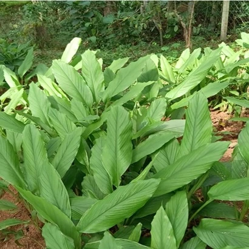
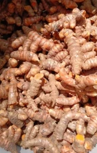
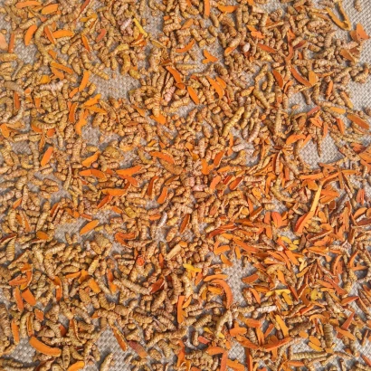
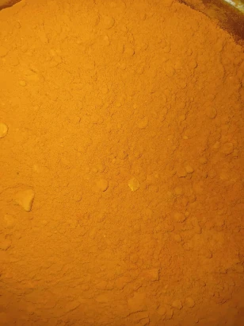

Turmeric – The Golden Root of Wellness
A staple in traditional Indian kitchens and Ayurvedic medicine, turmeric is valued for its vibrant color, earthy aroma, and therapeutic properties. It is rich in curcumin, a natural compound known for its anti-inflammatory, antioxidant, and immunity-boosting benefits.
At Sun Green Farms, we cultivate turmeric using purely organic and regenerative practices, with a strong focus on soil health, plant vitality, and sustainable farming.
We never use synthetic fertilizers, pesticides, or herbicides. Instead, we rely on:
- Crop rotation and green manure to naturally enrich the soil
- Cow dung and jeevamrutam (a fermented organic tonic) to nourish the plants
- Manual weeding and mulching to retain moisture and prevent soil erosion
- Healthy rhizome selection from previous harvests to maintain strong plant genetics
The crop matures in 7 to 9 months, and is harvested by hand to avoid damage to the delicate rhizomes.
After harvesting, the turmeric undergoes a careful, chemical-free process:
- Cleaned and boiled to remove the raw odor and enhance its natural color
- Sun-dried over several days in a solar drier, a fully enclosed setup that protects the rhizomes from dust and contamination
- Hand-polished and ground into a fine powder—without the use of any chemical additives or color enhancers

Turmeric

Harvested Rhizomes

Boiled and Sun-Dried Rhizomes

Ground Powder
Our turmeric retains its natural oils, earthy aroma, and high curcumin content, making it ideal for cooking, health remedies, and skincare.